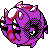

#287
Whirlipede
BugPoison
Abilities: Poison Point, Swarm, Speed Boost
Base stats BST 360
HP40
Attack55
Defense99
Speed47
Sp. Atk40
Sp. Def79
Evolution
dbbw EVOLVE_LEVEL, 32, SCOLIPEDELevel-up learnset
LevelMoveType
Lv. 1Defense CurlNormal
Lv. 1Poison StingPoison
Lv. 1ProtectNormal
Lv. 1RolloutRock
Lv. 12Poison FangPoison
Lv. 16ScreechNormal
Lv. 20Bug BiteBug
Lv. 26VenoshockPoison
Lv. 30Take DownNormal
Lv. 34AgilityPsychic
Lv. 38ToxicPoison
Lv. 50Double-EdgeNormal